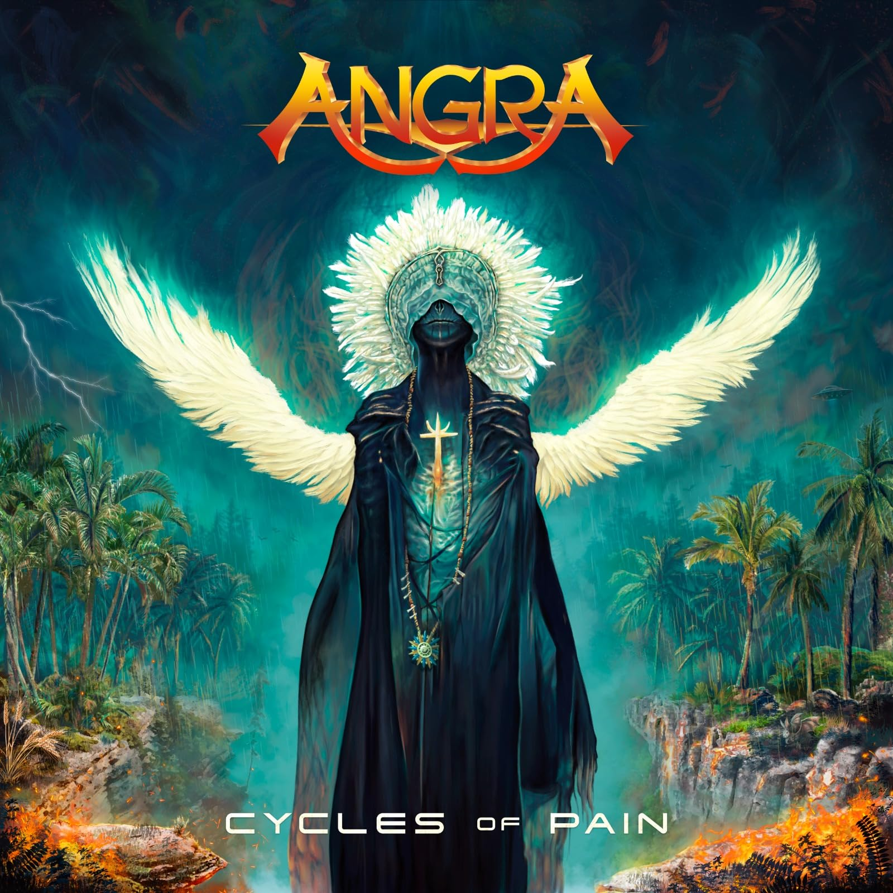

Cycles of Pain
Elenco
- Fabio Lione — lead vocals
- Rafael Bittencourt — guitars, piano (track 10), backing vocals
- Marcelo Barbosa — guitars
- Felipe Andreoli — bass, rhythm guitar (tracks 2, 3, 5, 6, 9, 11)
- Bruno Valverde — drums, percussion
Sobre o álbum
Cycles of Pain é o décimo álbum de estúdio da Angra e o primeiro em cinco anos após ØMNI (2018). Lançado em 3 de novembro de 2023 pela Atomic Fire Records, o disco marca o retorno da banda ao power/progressive metal clássico com produção, mixagem e masterização de Dennis Ward. O título — latim cyclus doloris — permeia faixas sobre impermanência, dor cotidiana, desigualdade social brasileira e resiliência.
Gravação
Produzido por Dennis Ward (Helloween, Magnum). Participações especiais: Lenine em "Vida Seca"; Vanessa Moreno em "Tide of Changes – Part II" e "Here in the Now"; Amanda Somerville e Juliana D'Agostini (piano) em "Tears of Blood". Coros extensos em "Ride into the Storm" e "Cyclus Doloris". Arte de Erick Pasqua e Jonathan Canuto.
Conceito
O álbum explora ciclos de sofrimento e transformação: intro latina Cyclus Doloris; dualidade humana em Ride into the Storm; autoexposição em Dead Man on Display; impermanência na suíte Tide of Changes; crítica à meritocracia em Vida Seca (PT/EN); manipulação política em Gods of the World; depressão cotidiana no título Cycles of Pain; crise de fé em Faithless Sanctuary; presença e empatia em Here in the Now; resistência apocalíptica em Generation Warriors; traição e vingança em Tears of Blood.
Recepção
Recepção positiva da crítica especializada; álbum ranqueado entre os melhores de metal de 2023 no Metal Kingdom (#46 do ano). Singles com videoclipes: Ride into the Storm, Tide of Changes, Vida Seca, Gods of the World e Here in the Now. Consolida a era Fabio Lione/Marcelo Barbosa como sucessora natural de ØMNI.
Faixas
- 1. Cyclus Doloris 0/10 0:47 Instrumental
- 2. Ride into the Storm 3/10 6:12
- 3. Dead Man on Display 3/10 6:06
- 4. Tide of Changes – Part I 4/10 1:15
- 5. Tide of Changes – Part II 4/10 5:37
- 6. Vida Seca 3/10 5:11
- 7. Gods of the World 1/10 4:43
- 8. Cycles of Pain 3/10 5:13
- 9. Faithless Sanctuary 2/10 6:39
- 10. Here in the Now 2/10 5:54
- 11. Generation Warriors 1/10 5:08
- 12. Tears of Blood 1/10 5:35
Referências
- Cycles of Pain — Metal Archives (database)
- Cycles of Pain — MusicBrainz (database)
- Angra — Cycles of Pain (Atomic Fire) (article)